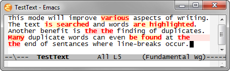

WriteGood Mode
There was a nice article by Matt Might showing off some shell scripts aimed at improving writing. These scripts were the inspiration for the WriteGood minor mode. Like the originals, this mode aids writings by checking for three fundamental problems:
- Weasel Words
- Passive Voice
- Duplicates
Installation and Usage
To use the mode, first grab it from Github or use one of the following commands.
> git clone git://github.com/bnbeckwith/writegood-mode.git > git clone http://github.com/bnbeckwith/writegood-mode.git
Then use code like the following to add it to emacs.
;; Supply the path to the mode repository (add-to-list 'load-path "location/of/writegood-mode") (require 'writegood-mode) ;; Set a global key to toggle the mode (global-set-key "\C-cg" 'writegood-mode)
When you want to show troublesome text, just turn on the mode with your defined key.
Writing Checks
WriteGood checks the text in three ways to find potential problems. In each case, a warning font highlights the problem. You can customize these fonts to your liking. By default, each font inheirts from the default warning face and adds a light background.

Matt explains each of these nicely in his original article, but I will also briefly discuss the issues here.
Weasel Words
Simply put, these are words that add no value to the text. These superfluous words seem to add value but only create clutter. By eliminating these extra (and useless) words, text becomes clear and to the point.
You are free to customize the list used in this check.
Passive Voice
Use of passive voice is one troublesome area in which I find myself failing often. The passive voice construction of sentences can be clunky causing the reader to try hard to get at the meaning. Active voice, on the other hand, is less clumsy and promotes clearer meaning.
Style guides such as The Elements of Style suggest favoring the active voice, but also allow for the occasions in which the passive voice is acceptable. As a result, not every warning produced by this check will be valid for your writing.
The check has two main regular expressions. There is the main regular expression that has the forms of "to be" followed by a verb. The following verb is either a word ending in "ed" or one specified by a list of irregular verbs whose past participle does not end in "ed". You can customized the list of irregulars if you find it is lacking.
Duplicates
Too often when writing or editing, especially when tired, text copied and pasted introduces duplicate words. Because of the way our minds work, this glitch is not always noticed. This error is especially difficult to notice when happening at line breaks.
The check for duplicate words does just that – it checks to see if any repeated words exist in the document. The check ignores case and catches errors like "The the". The check also runs across line breaks to catch duplicates adjacent but not on the same line.